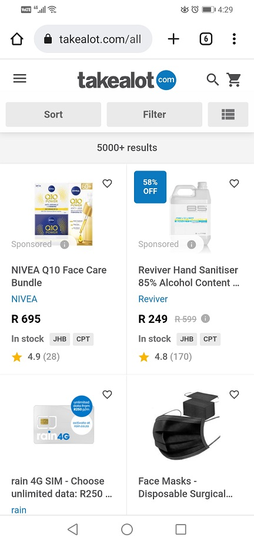

PARC: Repetition
Takelot
www.takealot.com The Takelot website uses repition very well which orientates the user and also makes the scrolling experience feel smooth due to the user needing to scroll through allot of products at times.
Hick's Law
DSTV
www.dstv.comThe DSTV website uses Hick's Law very well where it gives the user only but a few options so that they can make their decision allot quicker. This may lead to an increase in subscribers.
White Space and Clean Design
The Google home page uses white space very well which makes the user focus on the search bar very quickly.